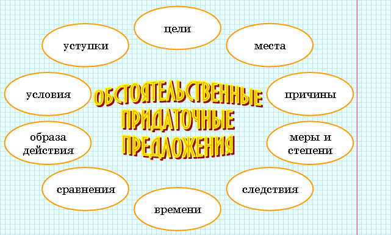

|
Придаточные обстоятельственные в сложноподчиненных предложениях замещают позицию обстоятельств разного рода и отвечают на вопросы, характерные для обстоятельств. |

|
Придаточное времени относится ко всей главной части, указывает на время протекания действия в главной части, отвечает на вопросы когда?, как долго?, с каких пор?, до каких пор? и присоединяется к главной части при помощи подчинительных союзов когда, как, пока, едва, только, прежде чем, в то время как, до тех пор пока, с тех пор как, как вдруг и др. |
 |
Не засыпай старого колодца (до каких пор?), пока не готов новый. |
|
Придаточные места указывают на место или направление движения, отвечают на вопросы где?, куда?, откуда? Средством связи в СПП с придаточными места являются союзные слова где, куда, откуда, выступающие в синтаксической функции обстоятельств. |
|
А там, в сознании, где еще вчера было столько звуков, осталась одна пустота. |
|
Придаточные причины относятся ко всей главной части, имеют значение причины, отвечают на вопросы почему?, отчего? и присоединяются к главной союзами потому что, оттого что, так как, ибо, благо, благодаря тому что, поскольку, тем более что и т.п. |
|
Они голодны, потому что их некому кормить, они плачут, потому что они глубоко несчастны. |
|
Придаточное следствия относится ко всей главной части, имеет значение следствия, вывода, присоединяется к главной части союзом так что и всегда находится после главной части. Придаточное следствия отвечает на вопрос что произошло вследствие этого? |
|
Он сразу уснул, так что на мой вопрос я услышал только его ровное дыхание. |
 |
Не относятся к СПП с придаточным следствия предложения, в главной части который есть наречие так, а в придаточной – союз что. |
|
За лето он вырос так, что стал выше всех в классе (это СПП с придаточным меры и степени). |
|
Не относятся к рассматриваемой группе и предложения, части которых соединены сочинительной или бессоюзной связью и во второй части которых представлены наречия потому и поэтому. |
|
Была хорошая погода, и потому мы отправились на озеро (ССП).
Пошел дождь, поэтому нам пришлось уйти (БСП). |
|
Придаточное условия относится ко всей главной части, имеет значение условия, отвечает на вопрос при каком условии? и присоединяется к главной с помощью подчинительных союзов если, когда (в значении союза если), коли, коль скоро, раз, в случае если и
др. Придаточные условия способны занимать любое положение по отношению к главной части. |
|
Лицо его казалось бы совсем молодым, если бы не грубые ефрейторские складки, пересекавшие щеки и шею. А какая операция, когда человеку перевалило за шестьдесят! |
|
В оформлении условной связи могут участвовать двухкомпонентные союзы: если – то, если – так, если – тогда. В этом случае придаточная часть стоит перед главной. |
|
Если завтра будет такая же погода, то я утренним поездом поеду в город. |
|
Придаточное цели относится ко всей главной части, имеет значение цели, отвечает на вопросы с какой целью?, зачем? и присоединяется к главной части союзами чтобы (чтоб), для того чтобы, с тем чтобы, затем чтобы, дабы, лишь бы, только бы, лишь бы только. |
|
Подложили цепи под колеса вместо тормозов, чтоб они не раскатывались, взяли лошадей под уздцы и начали спускаться. |
|
Союзы, употребляющиеся в СПП с придаточными цели, часто бывают разделены запятой. |
|
Я пригласил вас, господа, с тем, чтобы сообщить пренеприятнейшее известие (Н.В. Гоголь). |
|
Придаточное уступки относится ко всей главной части и имеет уступительное значение — называет ситуацию, вопреки которой осуществляется событие, названное в главной части. К придаточной части можно поставить вопросы несмотря на что?, вопреки чему? Придаточное уступки присоединяется подчинительными союзами хотя (хоть), несмотря на то что, даром что, пусть, пускай или союзными словами кто ни, где ни, какой ни, сколько ни и др. |
|
На улице было почти везде грязно, хотя дождь прошел еще вчера вечером (средство связи — союз хотя). Каковы бы ни были чувства, обуревавшие Бомзе, лица его не покидало выражение врожденного благородства (средство связи – союзное слово каковы, входящее в состав сказуемого). |
|
В предложениях с придаточными сравнения содержание главной части сравнивается с содержанием придаточной. От главной части к придаточной можно поставить вопросы как?, как что?, подобно чему? Придаточное присоединяется сравнительными союзами как, будто, словно, точно, подобно тому как, так же как, как будто, как бы, будто бы, словно бы, как будто бы. |
|
Князь Василий говорил всегда лениво, как актер говорит роль старой пьесы. |
|
Необходимо разграничивать придаточное сравнительное и сравнительный оборот. В придаточном сравнительном присутствует сказуемое или второстепенные члены группы сказуемого, т. е. зависимые от сказуемого слова. В сравнительном обороте группа сказуемого не представлена. |
|
Иней лежал на палубе, как белая крупная соль (сравнительный оборот – обстоятельство). |
|
Придаточное образа действия отвечает на вопросы как?, каким образом?, относится к одному слову в главной части – указательному местоименному наречию так или сочетанию таким образом (иногда они бывают опущены) и присоединяется к главной части союзным словом как или союзами что, чтобы. |
|
Служи так народу, чтобы за него в огонь и в воду. |
|
Придаточные меры и степени обозначают меру или степень того, что можно измерить с точки зрения количества, качества, интенсивности. Они отвечают на вопрос в какой степени?, насколько? и присоединяются к главной части союзами что, чтобы, как, словно, будто и др. или союзными словами сколько, насколько. |
|
Кругом было так тихо, что по жужжанию комара можно было следить за его полетом. |
|
Необходимо помнить, что тип придаточной части устанавливается в первую очередь по вопросу, на который она отвечает. Один и тот же союз (союзное слово) может встречаться в разных типах придаточных. |
|
Комната (какая?), куда меня привели, была похожа, скорее, на сарай (придаточное определительное).
Дерево валят туда (куда?), куда оно нагнулось (придаточное обстоятельственное места). Хотелось бы все-таки знать (что?), куда вы направляетесь (придаточное изъяснительное). |
 |
В некоторых случаях союз можно опустить, союзное слово – никогда. | |
Я сказал, что люблю
осенний лес (что – союз: Я сказал: "Люблю осенний лес"). Я знаю, что нам поможет ( что – союзное слово). |
|
Союз можно заменить только другим союзом, союзное слово – только союзным словом или теми словами из главного предложения, к которым относится придаточное. | |
Когда ошибешься, бывает очень неприятно (Если ошибешься, бывает
очень неприятно). Письмо, что ты мне написала, меня ничуть не испугала (что = письмо, которое). |
|
Союз – это служебная часть речи, поэтому он не может быть членом предложения, союзное слово может быть выражено местоимением или наречием, которые всегда выступают в роли членов предложения. | |
Я сказал, что люблю осенний лес. Я знаю, что нам поможет (что – местоимении, в предложении является подлежащим). |